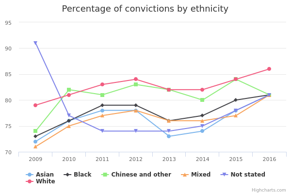
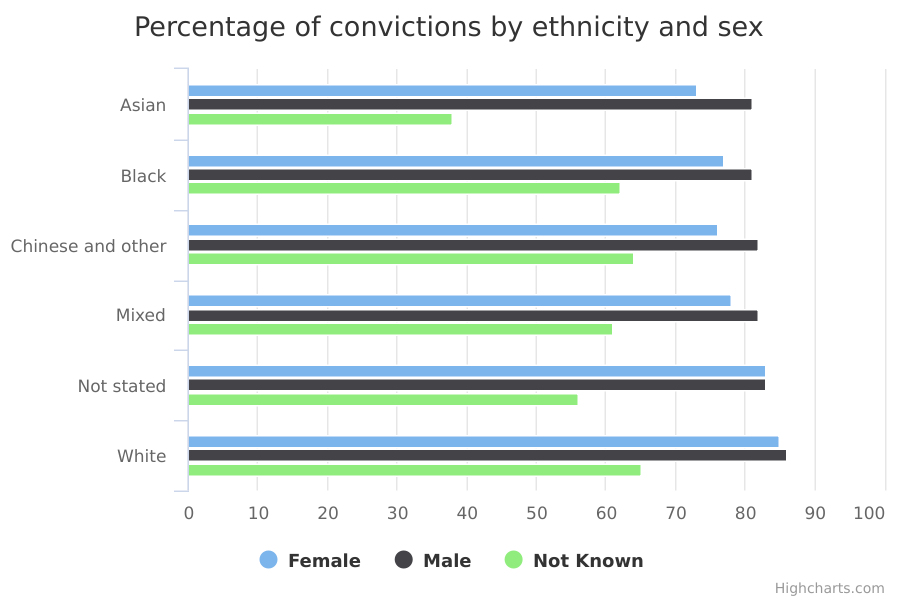
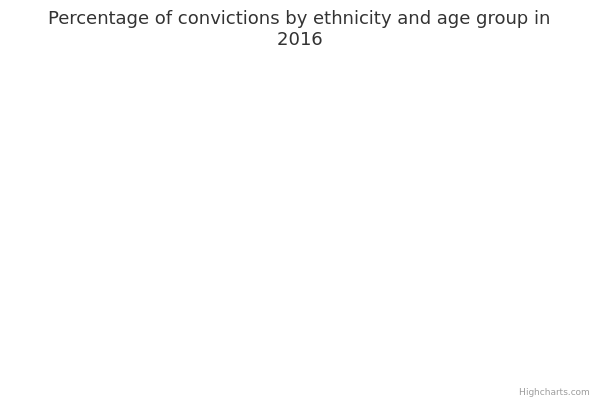

Convictions
The main facts and figures show that:
-
since 2009, the percentage of defendants who were convicted of an indictable-only or ‘either way’ offence has increased slightly for all ethnic groups; indictable-only offences must be tried in the Crown Court and ‘either way’ offences can be heard in either the Crown Court or a magistrates’ court
-
in 2016, each of the percentages by conviction for Black, Asian, Mixed, and Chinese and Other ethnic groups was 81%
-
in 2016, White defendants were more likely than any other ethnic group to be convicted, at 86%
Things you need to know
The data compares prosecutions and convictions within the same year.
If a prosecution begins in a magistrates’ court and moves to the Crown Court, the whole process may not be completed within a single year. This means that for a given year the number of convictions may be greater than the number of prosecutions, or the number of sentences may not equal the number of convictions.
The offence that a defendant has been charged with can change between the defendant’s first hearing in a magistrates’ court and later hearings in the Crown Court. If the original offence recorded in the prosecution is a different kind from the offence for which the defendant is later convicted, this will affect the percentage of convictions in the data.
Defendants are also classified by age group. Adults are aged 18 and over, and juveniles are under the age of 18.
What the data measures
This data measures the percentage of prosecutions that result in a conviction for certain offences.
There are three broad types of offence:
- indictable-only offences, such as murder, rape or robbery, which can only be heard in the Crown Court
- offences that are triable either way, which means they can be heard in either a magistrates’ court or in the Crown Court, and include offences like theft and handling stolen goods
- summary offences, such as motoring offences and minor assaults, which are heard in a magistrates’ court
This data only measures indictable offences and offences that are triable either way (also called ‘either way’ offences).
All criminal cases start in the magistrates’ courts. Prosecutions for indictable offences, and for ‘either way’ offences where the defendant has chosen to have a jury trial, are passed from there to the Crown Court.
The data gives the number of defendants found guilty within a given year for a certain offence, as a percentage of defendants who were prosecuted that year for the same offence.
Why these ethnic categories were chosen
Where possible, this data uses the standardised ethnic groups based on the 2001 census:
- White
- Mixed/Multiple ethnic groups
- Asian/Asian British
- Black/African/Caribbean/Black British
- Other ethnic group (which includes Chinese)
There is also a ‘not stated’ category, which is made up of people whose ethnicity has not been recorded or who chose not to state their ethnicity.
Convictions by ethnicity

Percentage and number of convictions by ethnicity
| 2009 | All | 79 | 414,659 | 328,449 |
|---|---|---|---|---|
| 2009 | Asian | 72 | 19,171 | 13,759 |
| 2009 | Black | 73 | 32,453 | 23,581 |
| 2009 | Chinese and other | 74 | 5,134 | 3,799 |
| 2009 | Mixed | 71 | 11,592 | 8,237 |
| 2009 | Not stated | 91 | 52,229 | 47,588 |
| 2009 | White | 79 | 294,080 | 231,485 |
| 2010 | All | 80 | 436,932 | 349,832 |
| 2010 | Asian | 76 | 20,557 | 15,714 |
| 2010 | Black | 76 | 34,725 | 26,403 |
| 2010 | Chinese and other | 82 | 5,235 | 4,288 |
| 2010 | Mixed | 75 | 12,817 | 9,645 |
| 2010 | Not stated | 77 | 45,600 | 35,311 |
| 2010 | White | 81 | 317,998 | 258,471 |
| 2011 | All | 81 | 422,858 | 343,052 |
| 2011 | Asian | 78 | 20,164 | 15,750 |
| 2011 | Black | 79 | 33,826 | 26,572 |
| 2011 | Chinese and other | 81 | 4,896 | 3,969 |
| 2011 | Mixed | 77 | 12,581 | 9,742 |
| 2011 | Not stated | 74 | 45,716 | 33,792 |
| 2011 | White | 83 | 305,675 | 253,227 |
| 2012 | All | 82 | 375,864 | 308,111 |
| 2012 | Asian | 78 | 17,745 | 13,895 |
| 2012 | Black | 79 | 29,153 | 23,051 |
| 2012 | Chinese and other | 83 | 4,193 | 3,470 |
| 2012 | Mixed | 78 | 10,839 | 8,497 |
| 2012 | Not stated | 74 | 45,633 | 33,772 |
| 2012 | White | 84 | 268,301 | 225,426 |
| 2013 | All | 80 | 369,495 | 293,807 |
| 2013 | Asian | 73 | 18,005 | 13,215 |
| 2013 | Black | 76 | 28,728 | 21,858 |
| 2013 | Chinese and other | 82 | 4,156 | 3,407 |
| 2013 | Mixed | 76 | 10,542 | 7,979 |
| 2013 | Not stated | 74 | 47,207 | 34,781 |
| 2013 | White | 82 | 260,857 | 212,567 |
| 2014 | All | 80 | 354,137 | 282,568 |
| 2014 | Asian | 74 | 16,736 | 12,437 |
| 2014 | Black | 77 | 27,045 | 20,755 |
| 2014 | Chinese and other | 80 | 3,627 | 2,895 |
| 2014 | Mixed | 76 | 9,630 | 7,299 |
| 2014 | Not stated | 75 | 49,890 | 37,563 |
| 2014 | White | 82 | 247,209 | 201,619 |
| 2015 | All | 82 | 322,329 | 265,812 |
| 2015 | Asian | 78 | 15,426 | 11,972 |
| 2015 | Black | 80 | 25,005 | 19,903 |
| 2015 | Chinese and other | 84 | 3,399 | 2,870 |
| 2015 | Mixed | 77 | 9,196 | 7,121 |
| 2015 | Not stated | 78 | 52,005 | 40,763 |
| 2015 | White | 84 | 217,298 | 183,183 |
| 2016 | All | 84 | 291,725 | 245,379 |
| 2016 | Asian | 81 | 14,716 | 11,845 |
| 2016 | Black | 81 | 25,000 | 20,148 |
| 2016 | Chinese and other | 81 | 3,077 | 2,501 |
| 2016 | Mixed | 81 | 7,615 | 6,184 |
| 2016 | Not stated | 81 | 55,914 | 45,252 |
| 2016 | White | 86 | 185,403 | 159,449 |
Summary
This data shows that:
-
since 2009, the percentage of defendants who were convicted of an indictable-only or ‘either way’ offence has increased for all ethnic groups, from 79% in 2009 to 84% in 2016
-
although the percentage of convictions has increased since 2009, the total number of prosecutions and convictions has decreased; prosecutions fell from 437,000 in 2010 to 292,000 in 2016 (around 30% fewer), while convictions fell from 350,000 in 2010 to 245,000 in 2016 (around 25% fewer)
-
in 2016, White defendants were more likely than any other ethnic group to be convicted, at 86%
-
in 2016, each of the percentages by conviction for Black, Asian, Mixed, and Chinese and Other ethnic groups was 81%
Download image and data
Convictions by ethnicity and gender

Percentage and number of convictions by ethnicity and sex
| 2009 | Asian | Female | 72 | 1,174 | 840 |
|---|---|---|---|---|---|
| 2009 | Black | Female | 76 | 3,888 | 2,953 |
| 2009 | Chinese and other | Female | 77 | 729 | 564 |
| 2009 | Mixed | Female | 70 | 1,738 | 1,221 |
| 2009 | Not stated | Female | 84 | 10,324 | 8,626 |
| 2009 | White | Female | 80 | 43,722 | 34,801 |
| 2009 | Asian | Male | 72 | 17,964 | 12,905 |
| 2009 | Black | Male | 72 | 28,463 | 20,577 |
| 2009 | Chinese and other | Male | 74 | 4,387 | 3,225 |
| 2009 | Mixed | Male | 71 | 9,832 | 7,001 |
| 2009 | Not stated | Male | 96 | 39,112 | 37,434 |
| 2009 | White | Male | 79 | 249,942 | 196,446 |
| 2009 | Asian | Not Known | 42 | 33 | 14 |
| 2009 | Black | Not Known | 50 | 102 | 51 |
| 2009 | Chinese and other | Not Known | 56 | 18 | 10 |
| 2009 | Mixed | Not Known | 68 | 22 | 15 |
| 2009 | Not stated | Not Known | 55 | 2,793 | 1,528 |
| 2009 | White | Not Known | 57 | 416 | 238 |
| 2010 | Asian | Female | 73 | 1,301 | 945 |
| 2010 | Black | Female | 74 | 4,201 | 3,127 |
| 2010 | Chinese and other | Female | 78 | 773 | 602 |
| 2010 | Mixed | Female | 75 | 1,856 | 1,392 |
| 2010 | Not stated | Female | 77 | 9,408 | 7,243 |
| 2010 | White | Female | 81 | 46,948 | 37,805 |
| 2010 | Asian | Male | 77 | 19,221 | 14,755 |
| 2010 | Black | Male | 76 | 30,438 | 23,236 |
| 2010 | Chinese and other | Male | 83 | 4,453 | 3,682 |
| 2010 | Mixed | Male | 75 | 10,942 | 8,242 |
| 2010 | Not stated | Male | 79 | 33,278 | 26,364 |
| 2010 | White | Male | 81 | 270,756 | 220,505 |
| 2010 | Asian | Not Known | 40 | 35 | 14 |
| 2010 | Black | Not Known | 47 | 86 | 40 |
| 2010 | Chinese and other | Not Known | 44 | 9 | 4 |
| 2010 | Mixed | Not Known | 58 | 19 | 11 |
| 2010 | Not stated | Not Known | 59 | 2,914 | 1,704 |
| 2010 | White | Not Known | 55 | 294 | 161 |
| 2011 | Asian | Female | 72 | 1,268 | 906 |
| 2011 | Black | Female | 80 | 3,470 | 2,790 |
| 2011 | Chinese and other | Female | 82 | 636 | 523 |
| 2011 | Mixed | Female | 76 | 1,795 | 1,359 |
| 2011 | Not stated | Female | 75 | 8,973 | 6,762 |
| 2011 | White | Female | 82 | 44,076 | 36,133 |
| 2011 | Asian | Male | 79 | 18,861 | 14,825 |
| 2011 | Black | Male | 78 | 30,294 | 23,746 |
| 2011 | Chinese and other | Male | 81 | 4,247 | 3,438 |
| 2011 | Mixed | Male | 78 | 10,771 | 8,376 |
| 2011 | Not stated | Male | 75 | 33,096 | 24,953 |
| 2011 | White | Male | 83 | 261,275 | 216,884 |
| 2011 | Asian | Not Known | 54 | 35 | 19 |
| 2011 | Black | Not Known | 58 | 62 | 36 |
| 2011 | Chinese and other | Not Known | 62 | 13 | 8 |
| 2011 | Mixed | Not Known | 47 | 15 | 7 |
| 2011 | Not stated | Not Known | 57 | 3,647 | 2,077 |
| 2011 | White | Not Known | 65 | 324 | 210 |
| 2012 | Asian | Female | 75 | 1,016 | 759 |
| 2012 | Black | Female | 80 | 2,817 | 2,242 |
| 2012 | Chinese and other | Female | 86 | 499 | 427 |
| 2012 | Mixed | Female | 77 | 1,364 | 1,050 |
| 2012 | Not stated | Female | 73 | 8,383 | 6,149 |
| 2012 | White | Female | 84 | 38,350 | 32,064 |
| 2012 | Asian | Male | 79 | 16,672 | 13,112 |
| 2012 | Black | Male | 79 | 26,263 | 20,769 |
| 2012 | Chinese and other | Male | 83 | 3,675 | 3,034 |
| 2012 | Mixed | Male | 79 | 9,450 | 7,431 |
| 2012 | Not stated | Male | 76 | 33,357 | 25,401 |
| 2012 | White | Male | 84 | 229,514 | 193,103 |
| 2012 | Asian | Not Known | 42 | 57 | 24 |
| 2012 | Black | Not Known | 55 | 73 | 40 |
| 2012 | Chinese and other | Not Known | 47 | 19 | 9 |
| 2012 | Mixed | Not Known | 64 | 25 | 16 |
| 2012 | Not stated | Not Known | 57 | 3,893 | 2,222 |
| 2012 | White | Not Known | 59 | 437 | 259 |
| 2013 | Asian | Female | 68 | 1,065 | 727 |
| 2013 | Black | Female | 75 | 2,633 | 1,965 |
| 2013 | Chinese and other | Female | 83 | 519 | 429 |
| 2013 | Mixed | Female | 75 | 1,294 | 970 |
| 2013 | Not stated | Female | 74 | 8,922 | 6,635 |
| 2013 | White | Female | 81 | 37,685 | 30,367 |
| 2013 | Asian | Male | 74 | 16,838 | 12,451 |
| 2013 | Black | Male | 76 | 26,003 | 19,855 |
| 2013 | Chinese and other | Male | 82 | 3,620 | 2,969 |
| 2013 | Mixed | Male | 76 | 9,231 | 7,001 |
| 2013 | Not stated | Male | 76 | 33,790 | 25,693 |
| 2013 | White | Male | 82 | 222,618 | 181,883 |
| 2013 | Asian | Not Known | 36 | 102 | 37 |
| 2013 | Black | Not Known | 41 | 92 | 38 |
| 2013 | Chinese and other | Not Known | 53 | 17 | 9 |
| 2013 | Mixed | Not Known | 47 | 17 | 8 |
| 2013 | Not stated | Not Known | 55 | 4,495 | 2,453 |
| 2013 | White | Not Known | 57 | 554 | 317 |
| 2014 | Asian | Female | 71 | 943 | 666 |
| 2014 | Black | Female | 74 | 2,650 | 1,963 |
| 2014 | Chinese and other | Female | 84 | 443 | 372 |
| 2014 | Mixed | Female | 76 | 1,349 | 1,019 |
| 2014 | Not stated | Female | 77 | 10,326 | 7,924 |
| 2014 | White | Female | 81 | 37,325 | 30,288 |
| 2014 | Asian | Male | 75 | 15,718 | 11,740 |
| 2014 | Black | Male | 77 | 24,313 | 18,748 |
| 2014 | Chinese and other | Male | 79 | 3,175 | 2,518 |
| 2014 | Mixed | Male | 76 | 8,240 | 6,264 |
| 2014 | Not stated | Male | 77 | 35,009 | 27,097 |
| 2014 | White | Male | 82 | 209,231 | 170,947 |
| 2014 | Asian | Not Known | 41 | 75 | 31 |
| 2014 | Black | Not Known | 54 | 82 | 44 |
| 2014 | Chinese and other | Not Known | 56 | 9 | 5 |
| 2014 | Mixed | Not Known | 39 | 41 | 16 |
| 2014 | Not stated | Not Known | 56 | 4,555 | 2,542 |
| 2014 | White | Not Known | 59 | 653 | 384 |
| 2015 | Asian | Female | 70 | 934 | 658 |
| 2015 | Black | Female | 79 | 2,381 | 1,874 |
| 2015 | Chinese and other | Female | 90 | 398 | 358 |
| 2015 | Mixed | Female | 78 | 1,237 | 970 |
| 2015 | Not stated | Female | 81 | 10,244 | 8,328 |
| 2015 | White | Female | 84 | 32,811 | 27,529 |
| 2015 | Asian | Male | 78 | 14,395 | 11,277 |
| 2015 | Black | Male | 80 | 22,513 | 17,970 |
| 2015 | Chinese and other | Male | 84 | 2,982 | 2,502 |
| 2015 | Mixed | Male | 77 | 7,930 | 6,136 |
| 2015 | Not stated | Male | 81 | 36,971 | 29,839 |
| 2015 | White | Male | 85 | 183,928 | 155,334 |
| 2015 | Asian | Not Known | 38 | 97 | 37 |
| 2015 | Black | Not Known | 53 | 111 | 59 |
| 2015 | Chinese and other | Not Known | 53 | 19 | 10 |
| 2015 | Mixed | Not Known | 52 | 29 | 15 |
| 2015 | Not stated | Not Known | 54 | 4,790 | 2,596 |
| 2015 | White | Not Known | 57 | 559 | 320 |
| 2016 | Asian | Female | 73 | 871 | 634 |
| 2016 | Black | Female | 77 | 2,205 | 1,695 |
| 2016 | Chinese and other | Female | 76 | 371 | 281 |
| 2016 | Mixed | Female | 78 | 967 | 749 |
| 2016 | Not stated | Female | 83 | 9,529 | 7,892 |
| 2016 | White | Female | 85 | 28,088 | 23,882 |
| 2016 | Asian | Male | 81 | 13,753 | 11,176 |
| 2016 | Black | Male | 81 | 22,670 | 18,375 |
| 2016 | Chinese and other | Male | 82 | 2,692 | 2,211 |
| 2016 | Mixed | Male | 82 | 6,615 | 5,415 |
| 2016 | Not stated | Male | 83 | 41,612 | 34,680 |
| 2016 | White | Male | 86 | 156,777 | 135,218 |
| 2016 | Asian | Not Known | 38 | 92 | 35 |
| 2016 | Black | Not Known | 62 | 125 | 78 |
| 2016 | Chinese and other | Not Known | 64 | 14 | 9 |
| 2016 | Mixed | Not Known | 61 | 33 | 20 |
| 2016 | Not stated | Not Known | 56 | 4,773 | 2,680 |
| 2016 | White | Not Known | 65 | 538 | 349 |
Summary
This data shows that:
-
from 2009 to 2016, the overall percentage of convictions for indictable-only or ‘either way’ offences was similar for men and women; for example, in 2016, 85% of men and 84% of women were convicted
-
in 2016, the White ethnic group had the highest percentage of convictions for both men (86%) and women (85%)
-
in 2016, the Black and Asian ethnic groups had the lowest percentage of convictions for men (81%), and the Asian ethnic group had the lowest for women (73%)
-
there was more variation in the percentage of convictions for women than for men' in 2016 this ranged from 73% to 85% for women, and from 81% to 86% for men
Download image and data
Convictions by ethnicity and age group

Percentage and number of convictions by ethnicity and age group
| 2009 | Asian | Adults | 72 | 16,856 | 12,130 |
|---|---|---|---|---|---|
| 2009 | Black | Adults | 73 | 27,054 | 19,742 |
| 2009 | Chinese and other | Adults | 74 | 4,687 | 3,488 |
| 2009 | Mixed | Adults | 71 | 8,825 | 6,247 |
| 2009 | Not stated | Adults | 92 | 46,969 | 43,271 |
| 2009 | White | Adults | 79 | 253,551 | 199,580 |
| 2009 | Asian | Juveniles | 70 | 2,315 | 1,629 |
| 2009 | Black | Juveniles | 71 | 5,399 | 3,839 |
| 2009 | Chinese and other | Juveniles | 70 | 447 | 311 |
| 2009 | Mixed | Juveniles | 72 | 2,767 | 1,990 |
| 2009 | Not stated | Juveniles | 82 | 5,260 | 4,317 |
| 2009 | White | Juveniles | 79 | 40,529 | 31,905 |
| 2010 | Asian | Adults | 77 | 18,165 | 14,005 |
| 2010 | Black | Adults | 78 | 28,599 | 22,183 |
| 2010 | Chinese and other | Adults | 83 | 4,817 | 3,985 |
| 2010 | Mixed | Adults | 76 | 10,000 | 7,626 |
| 2010 | Not stated | Adults | 77 | 41,589 | 32,129 |
| 2010 | White | Adults | 82 | 279,130 | 228,389 |
| 2010 | Asian | Juveniles | 71 | 2,392 | 1,709 |
| 2010 | Black | Juveniles | 69 | 6,126 | 4,220 |
| 2010 | Chinese and other | Juveniles | 73 | 418 | 303 |
| 2010 | Mixed | Juveniles | 72 | 2,817 | 2,019 |
| 2010 | Not stated | Juveniles | 79 | 4,011 | 3,182 |
| 2010 | White | Juveniles | 77 | 38,868 | 30,082 |
| 2011 | Asian | Adults | 79 | 17,862 | 14,067 |
| 2011 | Black | Adults | 80 | 27,744 | 22,253 |
| 2011 | Chinese and other | Adults | 82 | 4,444 | 3,646 |
| 2011 | Mixed | Adults | 78 | 9,815 | 7,699 |
| 2011 | Not stated | Adults | 74 | 41,468 | 30,581 |
| 2011 | White | Adults | 84 | 273,075 | 227,894 |
| 2011 | Asian | Juveniles | 73 | 2,302 | 1,683 |
| 2011 | Black | Juveniles | 71 | 6,082 | 4,319 |
| 2011 | Chinese and other | Juveniles | 72 | 452 | 323 |
| 2011 | Mixed | Juveniles | 74 | 2,766 | 2,043 |
| 2011 | Not stated | Juveniles | 76 | 4,248 | 3,211 |
| 2011 | White | Juveniles | 78 | 32,600 | 25,333 |
| 2012 | Asian | Adults | 79 | 15,916 | 12,524 |
| 2012 | Black | Adults | 80 | 24,586 | 19,747 |
| 2012 | Chinese and other | Adults | 83 | 3,811 | 3,180 |
| 2012 | Mixed | Adults | 80 | 8,757 | 6,998 |
| 2012 | Not stated | Adults | 74 | 41,650 | 30,718 |
| 2012 | White | Adults | 85 | 244,101 | 206,851 |
| 2012 | Asian | Juveniles | 75 | 1,829 | 1,371 |
| 2012 | Black | Juveniles | 72 | 4,567 | 3,304 |
| 2012 | Chinese and other | Juveniles | 76 | 382 | 290 |
| 2012 | Mixed | Juveniles | 72 | 2,082 | 1,499 |
| 2012 | Not stated | Juveniles | 77 | 3,983 | 3,054 |
| 2012 | White | Juveniles | 77 | 24,200 | 18,575 |
| 2013 | Asian | Adults | 74 | 16,450 | 12,133 |
| 2013 | Black | Adults | 77 | 25,035 | 19,267 |
| 2013 | Chinese and other | Adults | 83 | 3,869 | 3,204 |
| 2013 | Mixed | Adults | 77 | 8,899 | 6,859 |
| 2013 | Not stated | Adults | 74 | 44,024 | 32,370 |
| 2013 | White | Adults | 82 | 242,282 | 198,893 |
| 2013 | Asian | Juveniles | 70 | 1,555 | 1,082 |
| 2013 | Black | Juveniles | 70 | 3,693 | 2,591 |
| 2013 | Chinese and other | Juveniles | 71 | 287 | 203 |
| 2013 | Mixed | Juveniles | 68 | 1,643 | 1,120 |
| 2013 | Not stated | Juveniles | 76 | 3,183 | 2,411 |
| 2013 | White | Juveniles | 74 | 18,575 | 13,674 |
| 2014 | Asian | Adults | 75 | 15,570 | 11,620 |
| 2014 | Black | Adults | 78 | 24,016 | 18,656 |
| 2014 | Chinese and other | Adults | 81 | 3,389 | 2,741 |
| 2014 | Mixed | Adults | 77 | 8,204 | 6,321 |
| 2014 | Not stated | Adults | 75 | 46,985 | 35,434 |
| 2014 | White | Adults | 82 | 231,342 | 190,241 |
| 2014 | Asian | Juveniles | 70 | 1,166 | 817 |
| 2014 | Black | Juveniles | 69 | 3,029 | 2,099 |
| 2014 | Chinese and other | Juveniles | 65 | 238 | 154 |
| 2014 | Mixed | Juveniles | 69 | 1,426 | 978 |
| 2014 | Not stated | Juveniles | 73 | 2,905 | 2,129 |
| 2014 | White | Juveniles | 72 | 15,867 | 11,378 |
| 2015 | Asian | Adults | 78 | 14,355 | 11,192 |
| 2015 | Black | Adults | 81 | 22,163 | 17,904 |
| 2015 | Chinese and other | Adults | 85 | 3,165 | 2,687 |
| 2015 | Mixed | Adults | 79 | 7,885 | 6,226 |
| 2015 | Not stated | Adults | 79 | 48,921 | 38,510 |
| 2015 | White | Adults | 85 | 204,301 | 173,808 |
| 2015 | Asian | Juveniles | 73 | 1,071 | 780 |
| 2015 | Black | Juveniles | 70 | 2,842 | 1,999 |
| 2015 | Chinese and other | Juveniles | 78 | 234 | 183 |
| 2015 | Mixed | Juveniles | 68 | 1,311 | 895 |
| 2015 | Not stated | Juveniles | 73 | 3,084 | 2,253 |
| 2015 | White | Juveniles | 72 | 12,997 | 9,375 |
| 2016 | Asian | Adults | 81 | 13,715 | 11,110 |
| 2016 | Black | Adults | 82 | 22,106 | 18,145 |
| 2016 | Chinese and other | Adults | 82 | 2,859 | 2,346 |
| 2016 | Mixed | Adults | 83 | 6,623 | 5,476 |
| 2016 | Not stated | Adults | 81 | 52,502 | 42,731 |
| 2016 | White | Adults | 87 | 175,188 | 152,066 |
| 2016 | Asian | Juveniles | 73 | 1,001 | 735 |
| 2016 | Black | Juveniles | 69 | 2,894 | 2,003 |
| 2016 | Chinese and other | Juveniles | 71 | 218 | 155 |
| 2016 | Mixed | Juveniles | 71 | 992 | 708 |
| 2016 | Not stated | Juveniles | 74 | 3,412 | 2,521 |
| 2016 | White | Juveniles | 72 | 10,215 | 7,383 |
Summary
This data shows that:
-
the percentage of adults who were convicted for indictable-only or ‘either way’ offences is higher than for juveniles across all ethnic groups; in 2016, where ethnicity was known, 86% of adults and 72% of juveniles were convicted, a difference of around 14 percentage points
-
since 2013, the percentage of defendants who are convicted has risen for adults across all ethnicities, with the exception of the Other ethnic group
-
since 2009, the percentage of White juveniles who are convicted has fallen by 7 percentage points, from 79% in 2009 to 72% in 2016
-
in 2016, the Asian ethnic group had the highest percentage of juveniles and the lowest percentage of adults who are convicted, at 73% and 81% respectively
Download data
Methodology and type of data
Type of data
Administrative data
Purpose of data source
The data provides the key statistics on activity in the criminal justice system for England and Wales. The data provides users with information about proven offending and its outcomes in England and Wales. The content will be of interest to government policy makers in the development of policy and their subsequent monitoring and evaluation. Others will be interested in the way different crimes are dealt with in the criminal justice system.
Methodology
The analysis uses courts administrative data.
The data includes some defendants who are shown as not having been convicted in the Crown Court but sentenced there. These defendants were convicted of an offence in the magistrates’ court but sent to the Crown Court for sentencing.